Every question waiting on your answer, with its pictures. Answered questions come off this list. Reply in chat with the number, e.g. "Q12: shared".
1 open · updated 2026-11-06
Being redrawn: fewer logs that sink as they bob, and glints instead of bubbles under the falls.
White falling water, foam where it hits the pool.
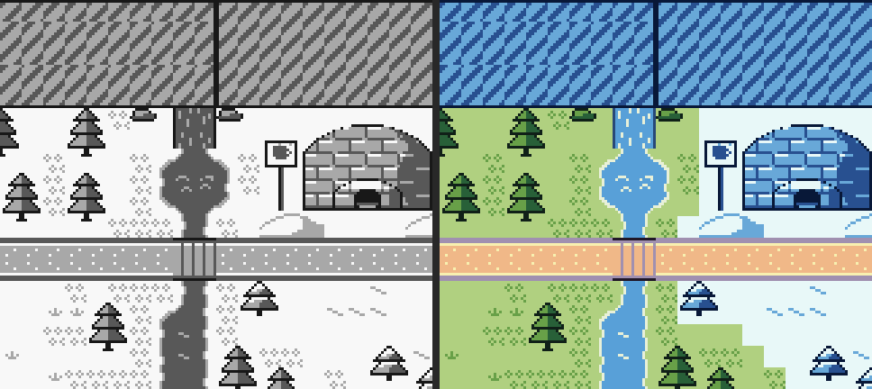
Slow 1 px bob, in three groups; upright logs rise instead of sink.
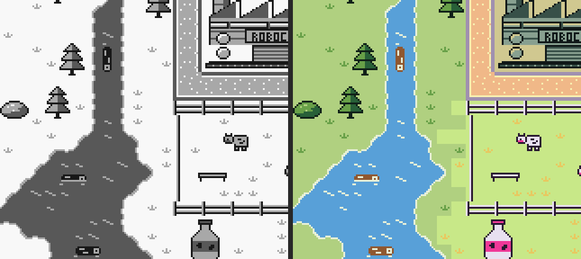
Very subtle.
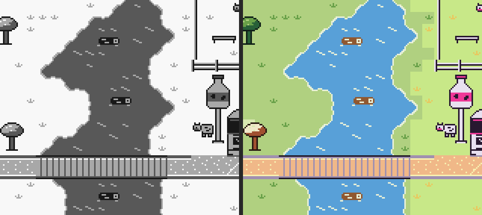
Dish and lamp in one; lamp dims every 2 s.
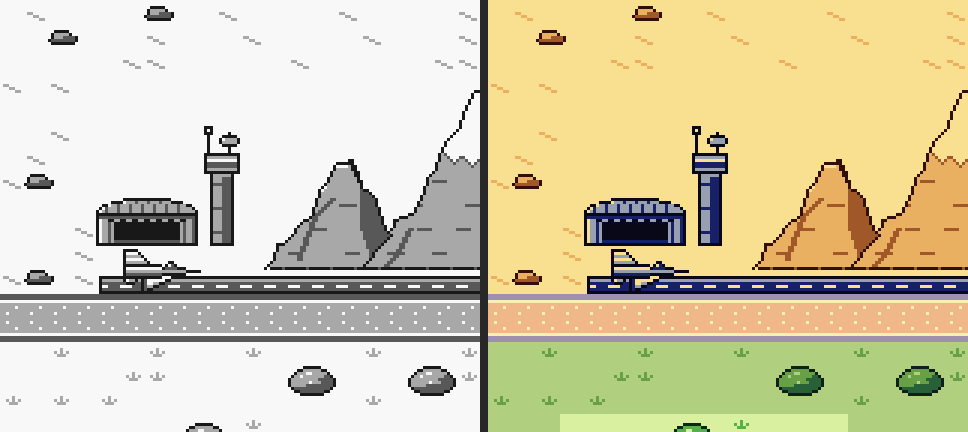
+6; centred fountain, two side streams.
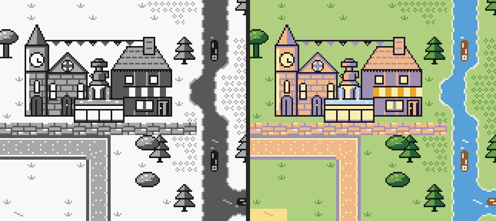
+6.
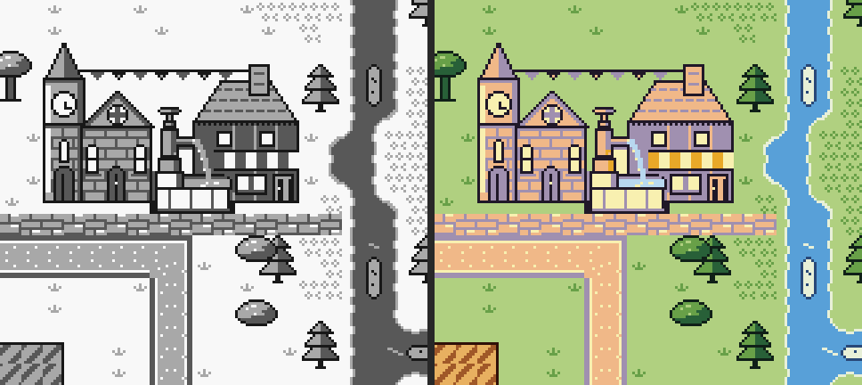
+4; your approved stadium.
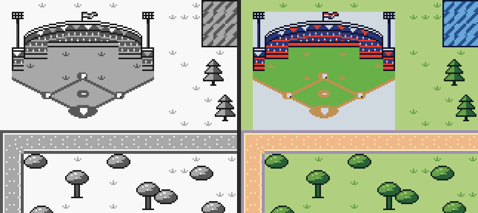
+10; white, puff starts just above the chimney.
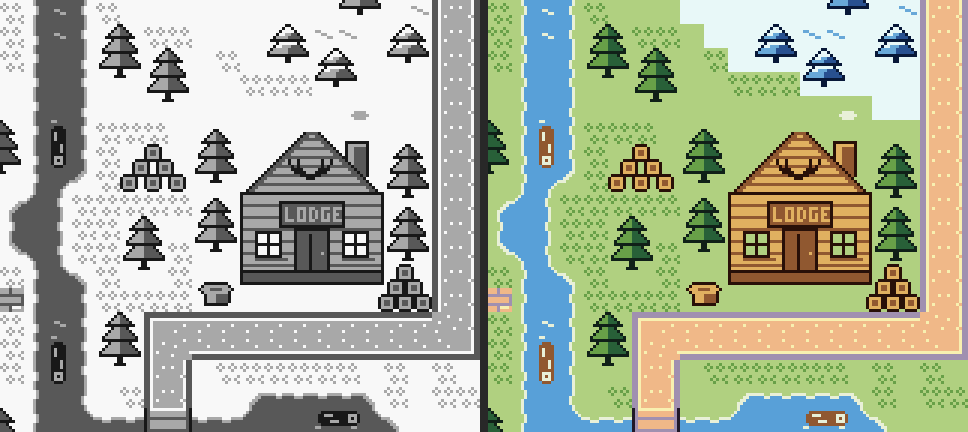
+15.
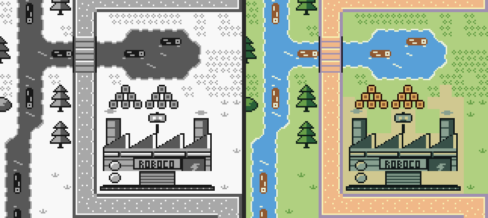
+3; your approved igloo.
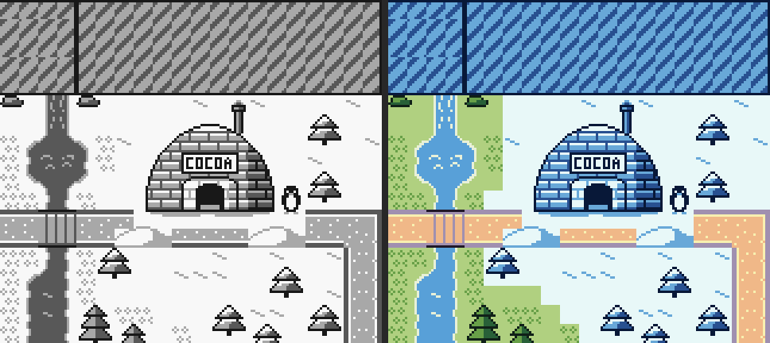
+6.
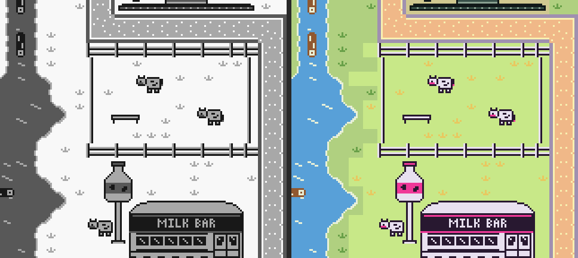